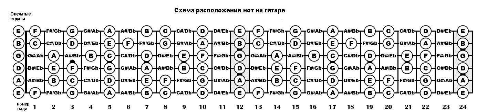

LogoHere
Что стоит знать каждому гитаристу?

Постарайтесь каждый день учить ноты на каждой из струн, а далее постарайтесь находить все одинаковые ноты на грифе.
Большинство разборов песен для гитаристов представлено в виде табов. Читать их проще чем ноты, потому что у них не указана длительность. Эта шпоргалка пригодится, если вы будете писать свои табы в редакторе или будете читать чужие.
Нота - звук на определенной частоте. Расстояние между двумя неодинаковыми нотами считается в полутонах. Две ноты сыгранные вместе образуют интервал. Каждый интервал имеет свое характерное звучание, их можно научиться отличать на слух
Аккорд - набор трех и более нот, сыгранных вместе. Каждый вид аккорда имеет свое правило постоения и свое настроение.